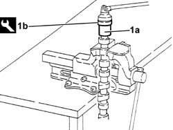
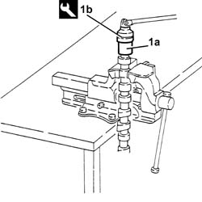

1036C40 timing variator on inlet camshaft in cylinder head r + r with shaft removed
- Path
- Procedures > 10 ENGINE > 1036 TIMING SYSTEM > 1036C overhead camshafts (2) > 1036C40 timing variator on inlet camshaft in cylinder head r + r with shaft removed
- Kind
- repair procedure (removal / refitting; the operation number is the code)
- Applies to
- engines: 1.6 TS , 1.8 TS, 2.0 JTS, 2.0 JTS; all production periods
- Interactive page
- https://sloeber94.github.io/elrnDB-a156/en/#/3239094
Applies to: engines: 1.6 TS , 1.8 TS; production: da 02/01 a 02/02, da 03/02 a 09/03, da 10/03
 Removing
Removing
 Refitting
RefittingPlace the inlet side camshaft in a vice fitted with protective jaws.
1. Remove the variable valve timing (1a) from the inlet side camshaft using the tool (1b).
 | Name | Country |
|---|---|---|
1b | Key | 1.822.147.000 |

Applies to: engines: 1.6 TS , 1.8 TS; production: da 02/01 a 02/02, da 03/02 a 09/03, da 10/03
Refitting
RemovingApply filler to the timing variator thread, taking care not to block the oil ducts.
Fit the variable valve timing to the inlet side camshaft, and tighten it to the specified torque using the tool.
| Name | Country |
|---|---|---|
- | Key | 1.822.147.000 |
 | Fastening | Component | Ø | Value (daNm) |
|---|---|---|---|---|
- | - | TIMING VARIATOR | - | 11.5 - 12 |
Remove the inlet side camshaft from the vice.
Applies to: engines: 2.0 JTS, 2.0 JTS; all production periods
Removing
RefittingPlace the inlet side camshaft in a vice fitted with protective jaws.
1. Remove the timing variator (1a) from the inlet side camshaft using the tool (1b).
| Name | Country |
|---|---|---|
1b | Key | 1.822.147.000 |

Applies to: engines: 2.0 JTS, 2.0 JTS; all production periods
Refitting
RemovingApply mastic to the timing variator thread, taking care not to block the oil ducts.
Fit the timing variator to the inlet side camshaft, and tighten it using the tool.
| Name | Country |
|---|---|---|
- | Key | 1.822.147.000 |
Remove the inlet side camshaft from the vice.